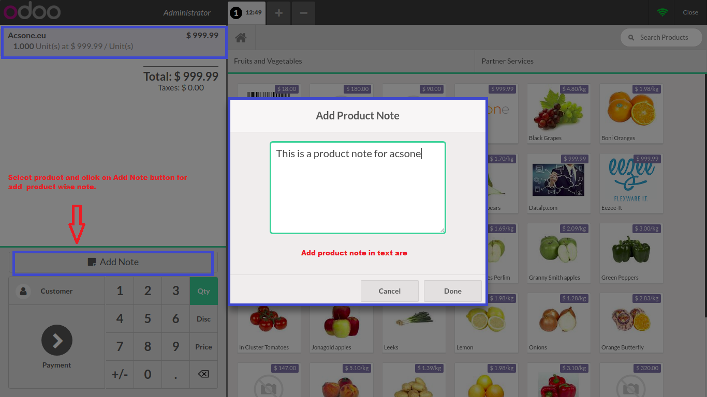
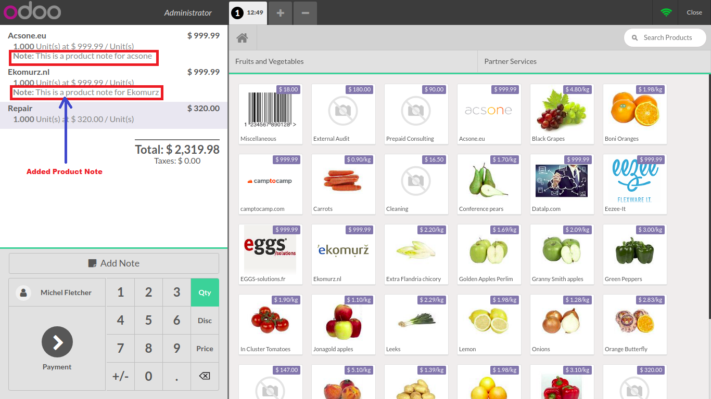
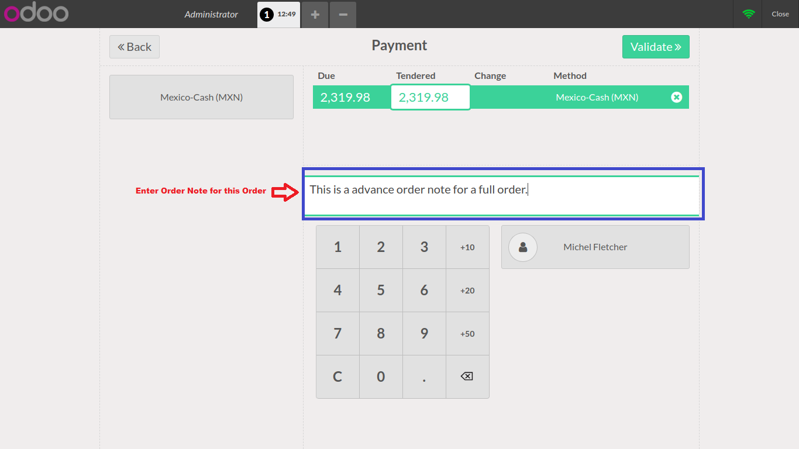
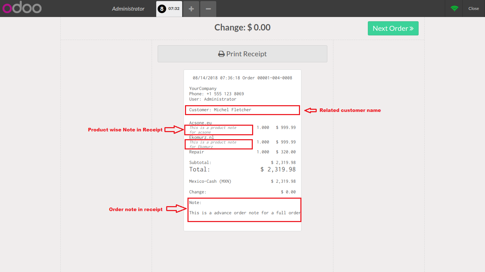
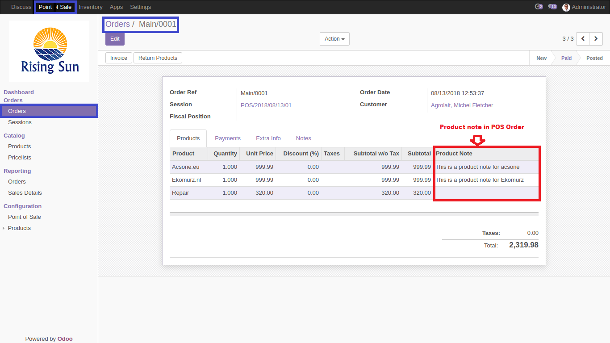
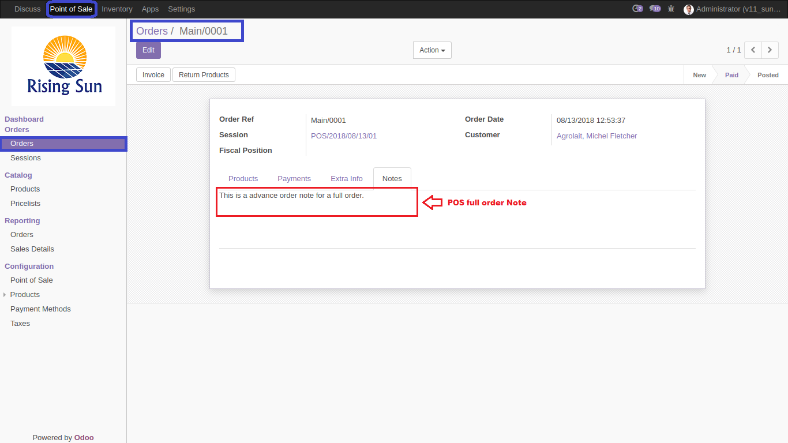

With this module you can add advance note for entite order wise each product wise note.
Create a new order select product and click on "Add Note" Button.

In Screen you can see product wise note added view.

In this screen you can see there is a option for a Order note and here you can add order note.

In this screen you can see product wise note and Order note in POS Receipt .

In the screen you can see Product note in POS Order.

In the screen you can see Order note .

Following are the configuration for a POS advance note.
NOTE: You can ask on contact number if you need any help for this module. we can help for only this module. if you need to resolve error with another module that it take an extra changes.
Contact us for support, query, customization, implementation, Odoo Version Migration